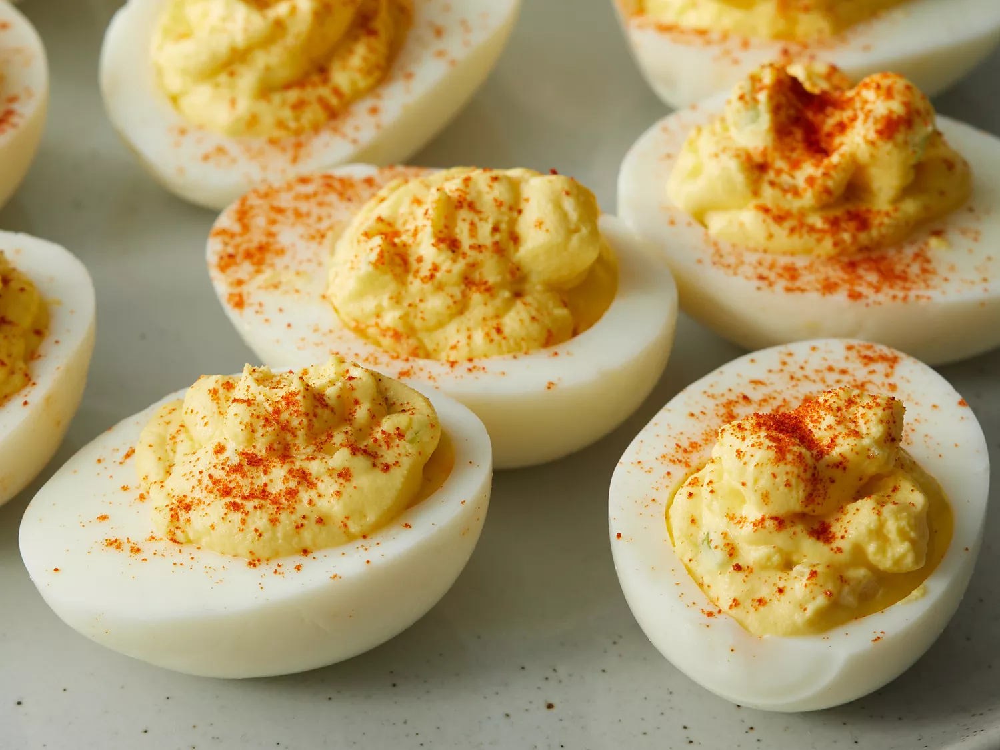
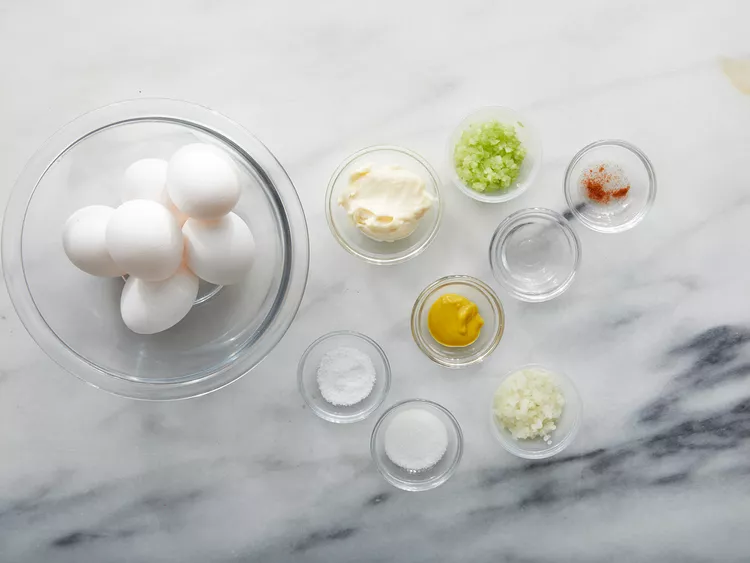
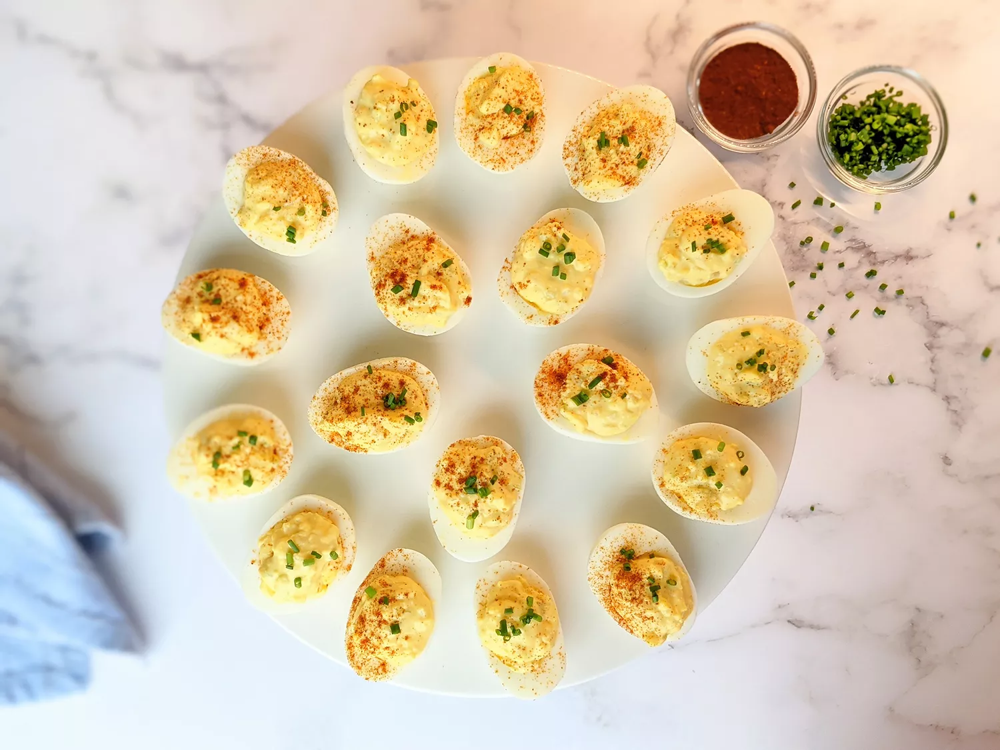

Deviled Eggs
Perfect deviled eggs with a creamy, savory filling and just a hint of tang ready for serving in just minutes. These are the perfect picnic staple!

Ingredients
- Eggs
- Mayonnaise
- Sugar
- Vinegar
- Mustard
- Vegetables
- Seasonings
Directions
- Slice eggs in half lengthwise and remove yolks. Place yolks in a medium bowl and set whites aside.
- Mash yolks with a fork. Add mayonnaise, relish, Dijon, yellow mustard, vinegar, salt, and pepper; stir until well combined and smooth. Transfer to a large zip-top bag.
- Arrange egg whites on a tray. Snip off the bottom corner of the zip-top bag. Fill each white with about 1 1/2 to 2 teaspoons filling. Sprinkle with paprika.

Return to main page